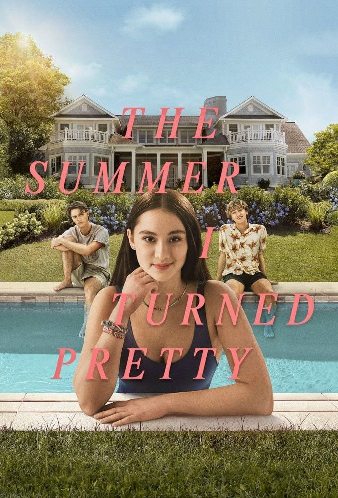
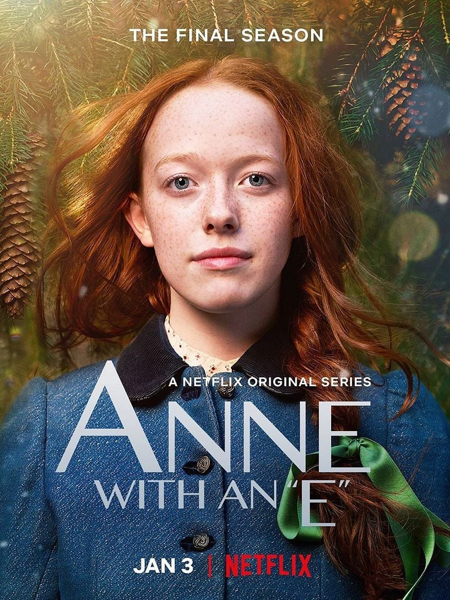

Claire Randall é uma enfermeira que vive num período de guerra no ano de 1945. Ela é casada com Frank Randall, um professor de história.
Durante uma época eles viveram separados pois Claire estava trabalhando em zonas de batalha, durante a 2º Guerra Mundial atendendo soldados feridos.
Ao voltarem a conviver juntos, eles decidem viajar para a Escócia, onde visitam locais frequentados pelos antepassados de seu marido.
Ao anoitecer, o casal assiste "às escondidas" um ritual feito por várias mulheres ao redor de pedras num local chamado Craig na Dun.
Outro dia, Claire sozinha volta para esse local e ao tocar em uma das pedras é trasnportada para o ano de 1743, onde enfrenta
vários desafios e perigos daquela época. Além disso, ela conhece o jovem Jamie Fraser, um forte guerreiro escocês, pelo qual se apaixona.
Bridgerton
Ano de lançamento: 2020
Direção: Chris Van Dusen e Shonda Rhimes
A série retrata a sociedade de Londres do século 19 com destaque para a família Bridgerton, que é composta por Violet e seus 8 filhos.
A história começa no contexto em que Daphne, a mais velhas entre as filhas mulheres, passa a debutar nos bailes em busca de um bom casamento. Certo dia,
em um desses bailes ela conhece o Duque de Hastings, que é melhor amigo de seu irmão Antony.
Após ser cortejada por um pretendente indesejado, Daphne faz um acordo com Duque de ambos fingirem ter interesse um pelo outro, o que também seria
conveniente para ele uma vez que queria afastar as mães desesperadas por casar suas filhas solteiras com o cobiçado Duque de Hastings.
Ao decorrer da história, eles acabam desenvolvendo uma amizade sincera que acaba se transformando em um sentimento mais profundo.
O verão que Mudou a Minha Vida

Ano de lançamento: 2022
Direção: Jenny Han
Baseada na trilogia de livros de O Verão que Mudou a Minha Vida, a série retrata a jovem Belly que todos os verões viaja
com sua mãe Laurel e seu irmão Steven para a casa de praia de Susannah, melhor amiga de Laurel.
Durante essas férias ela também sempre convive com os dois filhos de Susannah, Conrad e Jeremiah, que são muito próximos a ela.
Desde criança, Belly sempre foi apaixonada por Conrad, porém agora ela também se aproxima muito de Jeremiah, o que acaba levando a
um triângulo amoroso entre eles.
Anne With An E

Ano de lançamento: 2017
Direção: Amanda Tapping, David Evans, Paul Fox, Helen Shaver, Niki Caro, Patricia Rozema, Sandra Goldbacher
Anne Shirley é uma garota orfã de 13 anos que foi enviada por engano para ser adotada pelos irmãos Cuthbert, que aguardavam
a vinda de um garoto para ajudá-los com as tarefas da fazenda Green Gables.
A menina fica muito empolgada com a ideia de ser adotada, demonstrando grande parte de seu entusiasmo através do uso
de um vocabulário mais complexo para uma criança dessa idade já ter conhecimento, isso se dá pelo fato de que Anne é
apaixonada por leitura.
Mesmo que antes vivia em uma situação muito difícil no orfanato por conta do bullying e dos mals-tratos que já havia sofrido
com famílias adotivas, ela demonstra ser deslumbrada com a vida, sempre buscando alguma coisa bonita para dizer mesmo nos
dias mais difíceis.